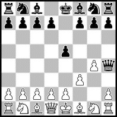
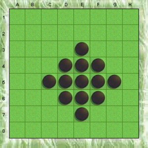
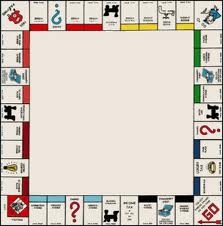

But did you know the shortest game of Othello is 9 moves long? e6 f4 e3 f6 g5 d6 e7 f5 c5. This was found originally by Manubu Maruo in 1975.
And contrary to this NPR page, the shortest game of Monopoly only requires 1 move: Player 1 rolls 3-3, buys Oriental Avenue, sells it to player 2, who sells it back to player 1 for all his money, rolls 6-5, draws "Pay School Tax" of $150, and loses.
|  |  |  |
Note that we count a move by either player as a move. What are the shortest possible games of other well-known two-player games?
To submit, please send the name of the game, a web link to rules of the game, the number of moves of the shortest game, and a description of how the shortest game occurs.
| Game | Length | Moves of Shortest Possible Game | Author |
|---|---|---|---|
| Abalone | 21 | A3-B4 H8-G8 B4-C5 G8H9-F8 C5-D6* I6-H5 D6-E7* G4H4-F3 C4-C3 F3G3-E2 C3-C2 E2F2-D1 A2-B2 H5I5-G4 A1-B1* G4H4-F3 B1-C1* F3G3-E2 B2-C2* (some irrelevant move) C2-D2* | Joe DeVincentis |
| Alice Chess | 5 | e4 d5 Be2 dxe4 Bb5 | sent by Joe DeVincentis |
| Amazons | 7 | a7-e3/j3 a4-a1/a2 d10-i5/i3 d1-b1/b2 j7-j5/i4 g1-c1/c2 e3-d2/d1 | Mark Mammel |
| Arimaa | 3 | It requires an initial setup with pieces that are not rabbits on a1 and a2, and rabbits on a7 and b1. Gold moves b2-b3-c3, b1-b2-b3. Silver moves a7-a6-a5-a4-a3. Gold moves a2-b2, pull a3-a2. a1-b1, pull a2 a1, to win. | Isaac Grosof |
| Ataxx | 4 | G1-E3 F6 A7-C5 F6-D4 | Mark Mammel |
| Avalanche Chess | 2 | g4/e6 Qh4/f3 | Richard Sabey |
| Backgammon | 17 | Player 2 needs to break the 13 point in the first 3 moves and the 24 point in the first 4 moves, not form any other blocks, and not hit any blots. Player 1 does the following moves. 6-6: 24/18(2) 13/7(2), 6-6: 13/7(3) 8/2, 5-5: 7/2(4), 6-6: 18/12/6(2) 6-6: 8/6(2) 7/1 6/off, 6-6: 6/off(4), 6-6: 6/off(4), 2-2: 2/off(4), 1-2: 2/off 1/off | Joe DeVincentis |
| Battle of LITS | 10 | The game goes as in this picture. | Grant Fikes |
| Battleship | 33 | Player 1 guesses correctly 17 times in a row. Player 2 can guess anything on his 16 turns. | Joe DeVincentis |
| Blokus | 38 (4 colors) 23 (2 colors) | The analysis can be found here. | Joe DeVincentis |
| Candyland | 7 | Player 1 gets Princess Frostine, Double Green, Double Green, Double anything but red. | Jeremy Galvagni |
| Can't Stop | 1 | Player 1 claims three columns on the first turn (for example, 11-11, 66-66, 11-66, 12-12, 12-12, 12-anything). | Grant Fikes |
| Carcassonne | 31 | If you draw a tile which cannot be legally played, that tile is discarded from the game and you draw another tile instead. So the shortest game consists in contriving to have as many tiles discarded as possible. Start by playing the arrangement of 12 tiles shown at the top of this picture. This has only field edges. The next 13 tiles drawn are all of those which have only city and/or road edges, and they are discarded. Next, other tiles are played around it as shown in the lower part of this picture, all but one of the ones at the far right. Then the other 27 tiles containing no city edges are drawn and discarded. Finally, the last piece (one of the two at far right) is drawn and played. With 40 tiles discarded and 32 played, this game requires 31 turns. | Joe DeVincentis |
| Cephalopod | 67 | Place 1's on b2, b1, c1, d1, d2, and c3. Place a 4 on c2 (capturing all neighbors) and a 6 on c1 (capturing all neighbors). Repeat mirrored on the other side for a 6 on c5. Place 1's on a1, b1, b2, b3, a3, and c2. Place a 3 on a2 (capturing all neighbors) and a 6 on b2 (capturing all neighbors). Repeated mirrored for 6's on b4, d2, and d4. Place 1's on a1, a2, a3, a4, a5, b1, b3, b5, c3, c2, c4, d3, e3, e2, e1, d1, e4, e5, and d5 to fill the board and end the game. | Grant Fikes |
| Checkers | 20 | 11-16 21-17 10-14 17x10 6x15 23-18 2-6 18x2(K) 9-14 2x18 3-7 24-20 1-6, 20x2(K) 12-16 2x9 5x23 26x3(K) 4-8 3x12 | Malcolm Beckerson, sent by Jon Palin |
| Chess | 4 | f3 e5 g4 Qh4. The final position is this picture. | ancient |
| Chinese Checkers | 30 | The following paper proves this is minimal. | David Fabian sent by Joe DeVincentis |
| Chinese Chess | 5 | Ch3-g3 Ad10-e9 Cg3xg7 Ch8-g8 Cg7xg10 | sent by Joe DeVincentis |
| Circe Chess | 9 | Nc3 c5 Na4 Qc7 Nxc5 Nc6 Na6 Nd8 Nxc7 | Bryce Herdt |
| Clue | 1 | Player 1 moves anywhere and guesses correctly. | Joe DeVincentis |
| Connect Four | 7 | Player 1 plays 4 vertical, while player 2 doesn't block. | Jeremy Galvagni |
| Connect6 | 6 | Player 2 makes 6-in-a-row while Player 1 does not block it. | Mark Mammel |
| Cribbage | 2 | Player 1 can score 78 points when he deals, and 48 when he doesn't, as shown on this page. | sent by Joe DeVincentis |
| Darts | 3 | One player repeats the following throws 3 times: treble 20 (60 points), treble 19 (57 points), bullseye (50 points). | Jeremy Galvagni |
| Dominion | 9 | Here is a complicated solution. | Joe DeVincentis |
| Downfall (Advanced) | 4 | Begin with an initial setup that has the hole in wheel 1 on the bottom, a hole in wheel 2 facing wheel 1, and a hole in wheel 4 facing wheel 2, all as seen from player 1's side. Turn 1: Player 1 turns wheel 1 until it picks up his #1 disc, drops it into wheel 2, picks up the number 2 disc, and leaves it resting against wheel 2. Turn 2: Player 2 turns wheel 2 so that it drops disc 1 into wheel 4, picks up disc 2, and leaves disc 2 resting against wheel 3. Turn 3: Player 1 turns wheel 3 so that it picks up disc 2 and leaves it resting against disc 5. Turn 4: Player 2 turns wheel 5 so that it picks up disc 2 and delivers it to the bottom, winning. | Joe DeVincentis |
| Dungeon | 13 | Choose elf or hero. 2 turns to head east and south ending turn at two secret doors. Find at least one. 2 turns to kill two level 4 monsters and receive huge emerald and jade idol treasures (5000 gp each). 3 turns to return to start. | Jeremy Galvagni |
| Dvonn | 53 | The board is set up as shown in this picture. Player 1 makes the move marked by 1. Player 2 has to pass. Player 1 makes the move marked by 2, player 2 has to pass, and so on. By the end of the fourth move, all the black and white pieces are disconnected from the DVONN pieces and are removed, ending the game. 49 moves are used for placement of the pieces, and 4 for their movement, making a total of 53 moves. | Jeremy Tan |
| Fluxx | 1 | Player 1 plays Play 3 (allows him to play two more cards), Love (Keeper), and All You Need is Love (Goal: You win if you have Love and no other Keepers) | Joe DeVincentis |
| Forbidden Island | 1 | Fools' Landing floods during initial set-up. First player doesn't shore it up, draws Waters Rise, and draws Fools' Landing again, sinking it. | Grant Fikes |
| Four | 12 | The game goes as in this picture | Grant Fikes |
| Gin Rummy | 1 | Player 1 begins with A234, A23, A23 of three different suits, and picks up a card that extends one of these melds, and immediately melds all 11 cards and declares big gin. Player 2 is dealt two red jacks and two black kings, queens, 10s, and 9s, and can not meld any of this. Player 1 scores 31 for big gin and 98 for his opponent's deadwood, making 129, which wins the game. | Joe DeVincentis |
| Giveaway Chess | 33 | d4 e5 dxe5 Qg5 Qxd7 Bxd7 Bxg5 Kd8 Bxd8 a6 Bxc7 Ra7 Bxb8 b6 Bxa7 a5 Bxb6 g6 Bxa5 Bb4 Bxb4 Ne7 Bxe7 Rf8 Bxf8 h6 Bxh6 g5 Bxg5 f6 Bxf6 Bh3 Nxh3 | Pritchard sent by Richard Sabey |
| Go Moku | 9 | Player 1 makes 5-in-a-row while Player 2 does not block it. | Mark Mammel |
| Goose | 1 | Player 1 throws 9, and uses Goose spaces to reach the goal space. | George Sicherman |
| Hare and Hounds | 7 | b3-c3 e2-d1 c3-d3 d1-c2 a2-b3 c2-c3 b1-c2 | Isaac Mammel |
| Hex | 21 | Player 1 makes a direct connection and Player 2 does not block it. | Mark Mammel |
| Hi Ho Cheerio | 5 | Player 1 rolls 4, 3, 3. | Jeremy Galvagni |
| Hive | 9 | Player 1 plays his queen. Player 2 plays his queen. Player 1 plays a soldier one space away from his opponent's queen. Player 2 plays a soldier next to his queen. Player 1 plays a soldier one space away from his opponent's queen. Player 2 plays a soldier next to his queen. Player 1 moves a soldier next to his opponent's queen. Player 2 plays a piece next to his queen. Player 1 moves a soldier next to his opponent's queen. | Joe DeVincentis |
| Horseshoes | 4 | Player 1 throws 4 double ringers and Player 2 throws none. | Jeremy Galvagni |
| Illuminati | 2 | Player 1 plays The Bavarian Illuminati (TBI) with power 10 and special goal to control groups with total power of 35. Turn 1: Player 1 attacks International Communist Conspiracy (ICC; resistance 8) to control and rolls a 2 and succeeds. The ICC attacks Clone Arrangers (resistance 6) to control. ICC has power 7, +3 to control Communist groups, and +4 for the shared Communist alignment so has effective power 14, he rolls a 2 and succeeds. As a free action, he plays the the card he drew this turn, Senate Investigating Committee, to cause the other player to lose his next turn. Turn 2: TBI attacks The Mafia (resistance 7) to control and rolls a 2 and succeeds. The Mafia attacks New York (resistance 8) to control. The Mafia has power 7, +3 for control of Criminal groups, +8 for two shared alignments, so effective power 18. He rolls a 2 and succeeds. With total power 10+7+6+7+7 = 37, he wins. | Joe DeVincentis |
| Ingenious | 25 | On the first 6 plays, each player plays a double next to one of the starting hexes. On the next 6 turns, each player plays a double of a color he has not scored yet next to the first double of that color. On the next 6 turns each player scores 6 points in one of the colors he has scored 4 points in. On the next 6 plays each player scores 8 points in a color he has 2 points in. Finally player 1 plays a double on the side of each stack, scoring 8 more points and an ingenious in each color, in one amazing final turn. This gives Player 1 18 points in every color, ending the game. See this picture. | Joe DeVincentis |
| International Draughts | 25 | 35-30 20-25 33-29 19-23 30-24 14-20 40-35 10-14 35-30 14-19 38-33 5-10 33-28 10-14 39-33 17-21 31-27 4-10 28-22 12-17 33-28 8-12 36-31 3-8 31-26. | Jean-Charles Meyrignac |
| Jenga | 1 | Player 1 knocks over the tower on his first turn. | Joe DeVincentis |
| Lines of Action | 9 | C1:A3 A2-C4 C8:A6 A4-D4 E1-C3 D4-G4 C3:A5 C4-F4 A3:A7 | Philip Cohen sent by Mark Mammel |
| Magic the Gathering | 1 | Player 1 plays Bayou, casts Dark Ritual, casts False Cure, and casts 4 Skyshroud Cutters, doing 20 damage to opponent, and winning the game. | Taibhsear |
| Martian Chess | 17 | a6-a4 c3-d4 a7xa4 d2-b4 a8xa4 a4xc6 c6xc2 c2xc7 c7xc1 c1xc8 c8-c2 b4xb6 b6xb3 b3xb7 b7xb2 b2xb8 b8xb1 | Grant Fikes |
| Monopoly | 1 | Player 1 rolls 3-3, buys Oriental Avenue, sells it to player 2, who sells it back to player 1 for all his money, rolls 6-5, draws "Pay School Tax" of $150, and loses. | Robert Manning |
| Monopoly Deal | 3 | Player 1 puts down the 2 Brown Properties and Park Place. Player 2 puts down all 3 Light Blue Properties. Player 1 puts down Boardwalk and Deal Breaks Player 2's set and wins. | Jay Cheong |
| Murus Gallicus | 11 | Player 1 moves D1-D3, E1-C3, D2-D4, D3-D5, D4-D6, D5-D7. Player 2 moves his black stones diagonally off of D7 and doesn't block. | Grant Fikes |
| Mutton | 2 | Wolf player eats any sheep, farmer goes berserk and shoots all of the wolves. | Grant Fikes |
| Neutreeko | 2 | C2-A2 C4-C1 | Grant Fikes |
| Nine Men's Morris | 18 | Player 1 moves in A1, A4, and B4 with his first three moves. Player 2 movies in G1, G4, and G7 with his first three moves, removing B4 from the game. The next 12 moves are all captures, with the first player repeatedly playing at A7 and removing G7, and the second player playing at G7 and removing A7. The last of these captures the 7th of the first player's pieces, eliminating him. | Joe DeVincentis |
| Old Maid | 0 | The dealer deals 26 cards to his opponent and 25 to himself. If the opponent gets 13 pairs, the dealer will have 12 plus the old maid. | Jeremy Galvagni |
| Othello | 9 | e6 f4 e3 f6 g5 d6 e7 f5 c5. The final position is this picture. | Manubu Maruo |
| Pandemic | 1 | In the initial set-up, three adjacent cities get three cubes each. The first player draws an Epidemic and adds three cubes to a fourth adjacent city. During the infection phase, draw two of those cities. The outbreak counter will hit at least 8, causing a loss. | Grant Fikes |
| Payday | 12 | Players agree to play only 1 month. Each player can reach 31 days in 6 rolls (avoiding Daylight Savings space). | Jeremy Galvagni |
| Period5 | 5 | B3-B1 E2-E1 C2-E2 C3-C1 A4-A5 | Grant Fikes |
| Plakoto | 5 | Player 1 rolls 4 doubles in the first 5 moves, moving all 15 pieces off their starting point, and one piece all the way around the board. Player 2 rolls 3 doubles in the first 4 moves, and moves 14 pieces off their starting point. On the ninth move, Player 1 moves a piece onto Player 2's last remaining piece still on its starting point to win. | Cameron Browne |
| Pokemon | 1 | Player 1 completes the initial set-up (by placing a Basic Pokemon). Player 2 is not dealt a Basic Pokemon with which to set-up.Player 2 reveals his hand and Player 1 has the option of drawing an extra card. In this way, Player 1 can draw his entire deck and lose on the first turn when he can't draw a card. | Grant Fikes |
| Progressive Chess | 3 | e4 Nc6/Nf6 Bc4/Qh5/Qxf7 | Richard Sabey |
| Quads | 13 | This picture shows the shortest game. | Jeremy Tan |
| Red | 8 | Put four small pieces in a 2x2 area and surround them with big pieces. | Grant Fikes |
| Regoot | 7 | B2 C3 D4 E5 F6 G7 H8 | Grant Fikes |
| Risk | 1 | Each player controls 14 territories and starts with 40 armies. If Player 1 wins every battle, it is possible to conquer Player 2 on the first move. | Erich Friedman |
| San Juan | 11 | Each player begins with 1 building and the game ends after the turn when somebody builds their 12th building. The builder role is the only time buildings can be built, and it can only be chosen once per round. The players always choose builder, producer, trader in this order, so they will always get at least 1 extra card each turn. One player doesn't build buildings. The other player builds the smithy the first turn (1 card discount on building production buildings), and builds indigo or sugar mills (basic cost 1 or 2) each other turn, so he always has enough cards to pay for building. | Joe DeVincentis |
| Saint Petersburg | 4 | A shortest game can be found here. | Joe DeVincentis |
| Scrabble | 5 | The board is blocked after this picture | Kyle Corbin sent by Jean-Charles Meyrignac |
| Settlers of Catan | 3 | The starting settlements look like this picture. Player 1 begins with 2 brick, 1 grain, 1 lumber, and 2 ore. Player 2 begins with 1 brick, 1 grain, 1 ore, and 3 wood. (1:2B,1G,1L,2O; 2:1B,1G,1O,3W) Turn 1. Player 1 rolls 9. He gets a grain and 2 ore, and player 2 gets a grain and an ore. (1:2B,2G,1L,4O, 2:1B,2G,2O,3W). Player 1 upgrades his settlement on the right to a city for 2G,3O. (1:2B,1L,O; 2:1B,2G,2O,3W). Turn 2. Player 2 rolls 8. He gets 2 wool and player 1 gets 2 lumber. (1:2B,3L,O; 2:1B,2G,2O,5W). Turn 3. Player 1 rolls 9. He gets 2 grain and 3 ore, and player 2 gets a grain and an ore. (1:2B,2G,3L,4O; 2:1B,3G,3O,5W). Player 1 trades a ore for all of player 2's resources. (1:3B,5G,3L,6O,5W; 2:1O). Player 1 extends his road by 3 units for 3B,3L and claims the longest road. (1:5G,6O,5W; 2:1O). Player 1 buys 5 development cards for 5G,5O,5W and they are all 5 of the victory point cards, so he exposes them and wins. | Joe DeVincentis |
| Shogi | 7 | P7g-7f G6a-7b B8hx3c+ G4a-4b +B3cx4b K5a-6a G*5b (see pictures here) | Kenichi Futamura sent by George Sicherman |
| Snakes and Ladders | 5 | Player 1: 4 (up ladder to 14) Player 2: anything but 6 Player 1: 6, 6, and 2 (up ladder to 84) Player 2: anything but 6 Player 1: 6, 6, and 4 to win | Joe DeVincentis |
| Sorry | 17 | Player 1 plays 2 on his first turn to start his first pawn and take an extra turn, and then plays 4 move that pawn back four spaces. Player 2 plays a 1 and starts his first pawn. Player 1 plays an 8 to bring his pawn home. Player 2 plays 12 to move and slide his pawn. Player 1 plays 2 and 4 again, entering a pawn and moving it backward. Player 2 plays 5 to move and slide his pawn again. Player 1 plays Sorry, replacing that pawn. Player 2 plays 1 and starts a pawn. Player 1 plays 10 to bring the pawn from the Sorry home. Player 2 plays 12 to move and slide his pawn. Player 1 plays 8 to bring his other pawn home. Player 2 plays 5 to move and slide his pawn. Player 1 plays Sorry, replacing that pawn. Player 2 plays a 3, doing nothing. Player 1 plays 10 to bring his last pawn home. | Joe DeVincentis |
| Stratego | 1 | Player 1 occupies all 6 exposed spaces in front with
bombs. On his first turn he cannot move, and so loses the game. | George Sicherman |
| Talpa | 8 | The players take turns using the pieces in the top row to capture the pieces below them, connecting the left and right edges and winning the game for that player. | Grant Fikes |
| Tanbo | 84? | The shortest-known game is here, resulting in this picture. | Grant Fikes |
| Teeko | 7 | Player 1 places 4-in-a-row and Player 2 doesn't block. | George Sicherman |
| The Game of Life | 27 | Spin all 10's (except one 9 to avoid the "go back 15 spaces" space). | Jeremy Galvagni |
| Tic-Tac-Toe | 5 | Player 1 takes the top 3 squares. | trivial |
| Ticket to Ride | 57 | One player must play at least 43 of his 45 trains. Since the longest route is 6 trains long, this requires playing at least 8 routes, each taking one turn, and collecting one train card for each train segment played. Since he starts with 4 train cards and can only get 2 more train cards each turn that he doesn't play train segments, this takes an additional 20 turns. Each player gets one additional turn after this point, so player 1 gets 29 turns. | Joe DeVincentis |
| To Court the King | 12 | To initiate the end of the game (by taking the King card), a player must roll seven of a kind. Since players begin the game with only three dice, that player must have acquired cards which give him 4 additional dice. Since the only card that gives more than one additional die is the General, and getting that card requires six of a kind, a player must have acquired four other cards before rolling seven of a kind. Since players can only get one card a turn, seven of a kind cannot be rolled until a player's fifth turn. As the game continues until the end of the round in which the King is taken, plus one additional round, this requires six turns by each player. | Joe DeVincentis |
| TransAmerica | 1 round 10 moves | In order for a round to end, all 5 of one player's cities must be connected. One possible shortest path which does this is marked in blue in this picture, which contains what counts as 21 segments of track (the red ones count as 2). If the players put their starting markers at the opposite ends of this line, they can build it in 11 moves. If player 1 has 5 of the cities along this line, and player 2 has the ones with the green outlines, player 2 will need more than 13 extra tracks to complete his cities when the round ends, so the game will end after this one round. The blue path can be improved to the yellow path, which requires only 10 moves. | Joe DeVincentis / Scott McMurray |
| Trax | 3 | A small loop made from 4 tiles. After the third tile is placed, the fourth tile completing the loop is forced. | Mark Mammel |
| Trivial Pursuit | 2 | Player 1 rolls a 6 or 5-2 repeatedly to answer 7 questions on the first turn. Player 2 gets a chance to duplicate the feat. | Joe DeVincentis |
| Twixt | 23 | Player 1 connects vertically starting with the peg in the bottom row, then alternating (+1,+2) and (-1,+2) bridges. | Mark Mammel |
| Uno | 1 | Player 1 has all word cards (skip, reverse, draw 2, wild draw 4) and doesn't forget to say Uno. | Jeremy Galvagni |
| War | 26 | One player wins all 26 comparisons. | trivial |
| Yavalath | 5 | Player 1 makes three in a row (and loses) while player 2 doesn't block. | Grant Fikes |
| Yu-Gi-Oh | 1 | Player 1 is dealt all 5 parts of Exodia the Forbidden One, and reveals it. | Grant Fikes |
| Zertz | 5 (basic) 6 (standard) | Referring to this picture, Player 1 places white ball 1 and removes the ring where the other 1 is. Player 2 places white ball 2 and removes the ring where the other 2 is, and so on. On the sixth move player 2 jumps ball 5 over balls 1, 2, 3 and 4, winning by capturing four white balls. For the basic rules, the fourth move is skipped and the first player wins by jumping over balls 1, 2 and 3. | Jeremy Tan |
| 6 Nimmt | 1 | The top 20 highest valued cards are worth 1×7 + 8×5 + 10×3 + 1×2 = 79 points. It can be arranged that one player gets all these cards in the first round, losing the game. | Joe DeVincentis |
If you can extend any of these results, please e-mail me. Click here to go back to Math Magic. Last updated 11/1/12.
{kind=link}
{kind=link}
{kind=link}
{kind=link}
{kind=link}
{kind=link}
{kind=link}
{kind=link}
{kind=link}
{kind=link}
{kind=link}
{kind=link}
{kind=link}